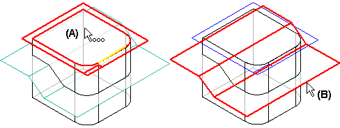
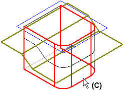
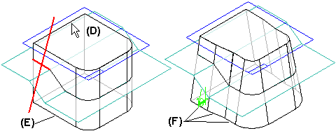

Using parting geometry
You can define the pivot location using parting geometry, rather than a reference plane or face on the part. When you set the From Edge, From Parting Surface, or From Parting Line options on the Draft Options dialog box, a Select Parting Geometry step is added to the command bar. Although you still must define a draft plane of reference, the parting geometry you select defines the pivot location. The parting geometry can consist of 2D or 3D elements.
To construct a draft feature using parting geometry, first select a planar face or reference plane (A) to define the draft plane of reference. Then select the parting geometry (B) you want to use as the pivot location. In this example, a parting surface was defined using construction surfaces.

When you have finished selecting the parting geometry, click the Next button on the command bar to proceed to the Select Face step. Then select the faces you want to draft (C).

In synchronous modeling:
After you have selected the faces which you want to draft, click the Next button. As with simple drafts, position the cursor to define the draft direction (D), and click when the correct direction is displayed. Depending on the type of parting geometry you use, it may be necessary to split existing faces on the model into multiple faces to construct the feature. In this example, the single planar face (E) on the side of the model was split into three faces (F). After defining the draft direction, type a draft angle in the value field and click the Finish button to apply the draft angle.
In ordered modeling:
After you have selected the faces which you want to draft and define the draft angle, click the Next button to proceed to the Draft Direction step. As with simple drafts, position the cursor to define the draft direction (D), and click when the correct direction is displayed. Depending on the type of parting geometry you use, it may be necessary to split existing faces on the model into multiple faces to construct the feature. In this example, the single planar face (E) on the side of the model was split into three faces (F).

How do I
Add a draft angle to a partExamples: Constructing drafts to different sides
Examples: Selecting draft faces with the chain method
Examples: Selecting draft faces with the loop sides method
Learn more
Adding draft to partsWorkflow overview
Editing add draft features
Defining the draft plane
Split draft
Step draft
Things to consider with rounds and draft angles
Look up more details
Add Draft commandAdd Draft command bar
Add Draft command bar
Add Draft command bar
Draft Options dialog box
Draft Parameters dialog box
Example: Draft Options